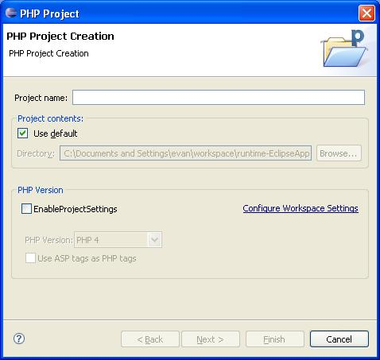
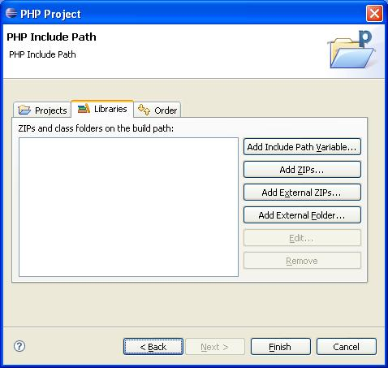
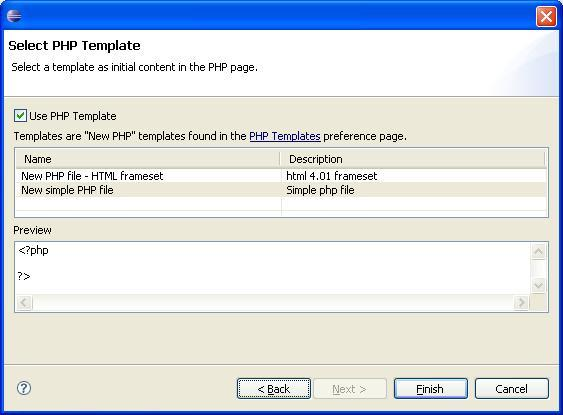

To create a project:
Click File > New > PHP Project (or the following key combinations). The PHP Project Creation wizard will open.
Alt+Shift+N | PHP Project
Alt+F | Alt+N | P | Enter

Figure: 1 - New PHP Project
Enter a name for your new project into the Project Name field. The project that you create will map to a directory structure in the file system. The default file system location is displayed (dimmed) in the Directory field. If you want to create the project and its contained resources in a different location, clear the Use default location checkbox and specify the new location.
If you want the new project to be dependent on one or more other projects, click Next. The PHP include path dialog will open. Select the projects to be referenced.

Figure: 3 - New Project
Click Finish. The new project will be listed in one of the navigation views.
The General | Perspectives | Preference page allows you to specify the perspective behavior when a new project is created. See PHP Preferences.
Click on the name of the PHP project the new PHP file will belong to.
Click File | New | PHP File to open the New PHP File dialog.
You may chose a different file folder if required. Click Next to open the Select PHP Template dialog.

Figure 4 - New PHP Template
Click Use PHP Template in order to use a defined PHP template.
Click Finish to finish creating the PHP file. The file will open in the Editor, and will contain the pattern defined in the template selected (if selected).